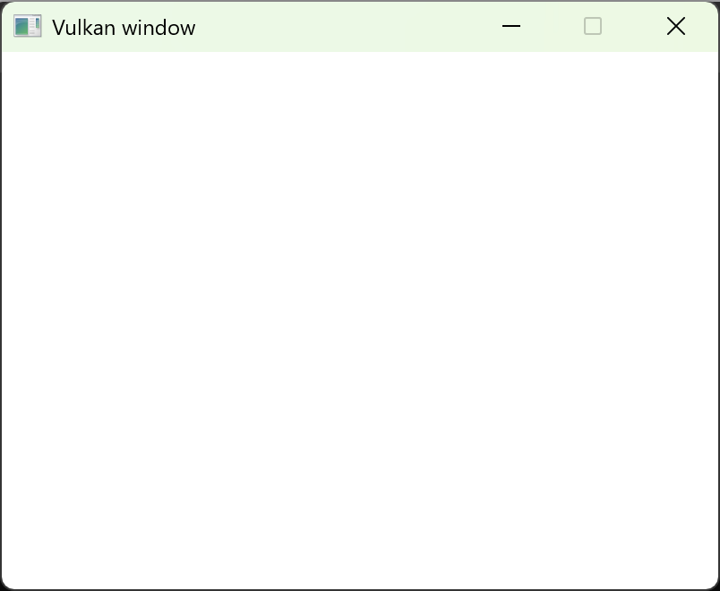

最近Vulkan在图形编程领域比较火爆，基本取代了OpenGL图形支撑系统，特别是google宣布Android系统全面采用Vulkan作为基础图形支撑平台后，基于OpenGL开发的图形应用可能很快要被淘汰了，为此作者在参阅多个Vulkan编程入门文章的基础上，通过实际编程实践整理出该篇Vulkan入门文章，暂定标题为《Step-by-Step学习Vulkan编程入门》，目的是通过该篇文章，不仅实际学会Vulkan编程的基本过程，而且能够了解Vulkan编程过程中用到的各种概念，并且基本掌握Vulkan程序的基本架构，为以后对Vulkan程序架构封装打下良好的程序基本功。
OpenGL图形工业标准发展到4.6后基本就停止了，由Khronos Group团队在2015年游戏开发者大会（GDC）上发布的新的图形处理标准，号称是glNext，旨在提供更低的CPU开销与更直接的GPU控制，其理念大致与Direct3D 12和Metal类似。经过几年的发展目前Khronos Group组织已经发布Vulkan API 1.4版，Vulkan图形支撑平台被操作系统，专业图形应用程序所选择，会逐步替代较为老旧的OpenGL支撑平台。
Khronos Group团队 ：成立于 2000 年 1 月，由包括 3Dlabs, ATI, Discreet, Evans & Sutherland, Intel, Nvidia, SGI 和 Sun Microsystems 在内的多家国际知名 多媒体 行业领导者创立，致力于发展开放标准的 应用程序接口 API ，以实现在多种平台和 终端设备 上的 富媒体 创作、加速和回放。其最具有代表性的标准就是OpenGL图形编程标准成为事实上的图形处理的工业标准，统治实际计算机行业20多年，具有深远的影响。
Vulkan API可以从Khronos官方网站上下载，根据操作系统平台选择响应的安装包，如选择Windows平台下的最新SDK下载安装，特别留意的是这个SDK包括了很多的内容，诸如Samples、Documents，这些资料非常有助于学习。安装完毕，继续安装并注意SDK安装的位置，安装完成后我们首先验证您的PC 显卡驱动程序是否支持Vulkan，进入安装SDK的目录,打开Bin目录运行vkcube.exe`演示程序，您将会看到以下内容。
安装完毕，最好检查一下系统环境变量的设置：作者安装的Vulkan版本为1.4.304.0，安装位置C:\VulkanSDK\1.4.304.0
VULKAN_SDK = C:\VulkanSDK\1.4.304.0
%VULKAN_SDK%\Bin;添加到path路径下
如果环境设置正确后不能运行vkcube.exe`演示程序，可能你的计算机显卡对Vulkan不支持，或者没有安装正确的显卡驱动，请检查响应的显卡驱动，确保能够支持Vulkan程序运行。
额外安装：本篇文章用到OpenGL开发过程中被普遍使用的GLFW库，该库可以从官方下载，也可以从本文下载提供的压缩包下载glfw-3.4.bin.WIN64.zip 。下载完毕解压后将包含：glfw3.h、glfw3native.h文件的GLFW目录拷贝到C:\VulkanSDK\1.4.304.0\Include目录下：
将适合你使用编译器的库文件glfw3.lib拷贝到C:\VulkanSDK\1.4.304.0\Lib目录下；
安装完毕Vulkan SDK后，按C:\VulkanSDK\1.4.304.0\Include下会包含一系列子目录，本教程要用到的子目录如下：
\dxc 为微软DirectX 12并编写的Shader进行编译的相关库头文件， 本文章暂时用不着。
\glm 为OpenGL Mathematics 库，用于完成图形学编程过程中用到的计算数学库。
\glslang 为OpenGL类型的Shader编译需要的头文件，本文章暂时用不着。
\Volk 为一次性加载Vulkan扩展函数的库，相当于OpenGL用到的glad库，本文章暂时用不着。
\SDL2 一个通用的窗口创建库需要的头文件，本文章使用glfw窗口创建库，不用SDL2库。
\Slang 为NVIDIA Slang编写的即时Shader提供编译的头文件。
\spirv_cross \spirv-tools \spirv-headers 是三个与SPIR-V相关的开源项目，它们在图形渲染和计算着色器的开发中发挥着重要作用，本文章暂时用不着。
\vma Vulkan Memory Allocator 属于单头文件“stb-style”风格的Vulkan内存分配库头文件，本文章暂时用不着，以后会有重点应用。
\vulkan vulkan API头文件目录，主要通过vulkan.h头文件引用需要的头文件函数。
vulkan API函数主要分为：
核心函数-----主要通过vulkan_core.h头文件进行引用，以vk开头后面直接跟函数功能描述单词，如：kCreateInstance、vkDestroyInstance、vkEnumeratePhysicalDevices等，这类函数不需要动态载入，只需要按照Vulkan规则调用头文件提供的函数，然后包含Vulkan库文件就可使用。
Vulkan扩展函数：与OpenGL相同，Vulkan设计之初就允许不同操作系统和显卡设计厂家提供Vulkan扩展函数，以实现不同特定的应用，例如Vulkan为了实现不同操作系统间窗口架构设计的特殊性，为不同操作系统设计了特定的扩展函数，从而实现 Vulkan系统多操作系统的适应性。 Vulkan扩展函数扩展函数以函数指针的形式提供，同样以vk开头后面根随函数功能描述单词最后跟随扩展厂家或应用领域或EXT：如 vkGetMemoryWin32HandleNV为英伟达NVIDIA 公司扩展。
Vulkan扩展函数在头文件中以函数指针形式存在， Vulkan库文件不包含函数运行需要的代码或动态库链接代码，使用函数前必须动态引入函数指针（Volk库提供了一次性引入 Vulkan扩展函数的方案），本文档引入扩展函数的方法将在下面程序设计过程中讲述。
Vulkan扩展函数主要有两种类型，一种是实例(Vulkan Instance)扩展，实例扩展通常与创建具体的Vulkan Instance实例需要针对具体的操作系统 下的窗口系统需要提供的扩展函数，每种操作系统需要的扩展函数不近相同(我们会在以后程序中会具体应用)，种类扩展通过vkEnumeratelnstanceExtensionProperties枚举得到，在本文档中我们将使用glfw库提供的实例(Vulkan Instance)扩展调用函数获得夸操作系统功能的应用：glfwGetRequiredInstanceExtensions
一种是Vulkan Device扩展，Vulkan Device扩展应用于使用场景包括检查物理设备的扩展支持情况、验证物理设备是否支持应用程序所需的Vulkan扩展等。通过使用扩展，开发者可以充分利用硬件的特定功能，提高应用程序的性能和效率。该类扩展使用vkEnumerateDeviceExtensionProperties枚举得到扩展是否被具体设备支持：
下面函数用于获得 指定物理设备（physicalDevice）支持的所有 Vulkan 扩展（Extensions）
1std::vector<VkExtensionProperties> VulkanRenderer::getAvailableExtensionsProperties() {2uint32_t extensionCount;3vkEnumerateDeviceExtensionProperties(physicalDevice, nullptr, &extensionCount, nullptr);4std::vector<VkExtensionProperties> extensions(extensionCount);5if(extensionCount==0) {6throw std::runtime_error("No extensions found!");7}8vkEnumerateDeviceExtensionProperties(physicalDevice, nullptr, &extensionCount, extensions.data());9return extensions;10}
到目前位置可能你对Vulkan还是一个既有总体认识，还是很模糊的认识的状态，没关系，下节我们将逐步进入实际的Vulkan的具体编程，通过程序我们分步骤的逐渐学习Vulkan相关知识和概念。本文章最后我们回编写出一个如下运行结果的Vulkan程序。
①启动Visual Studio，然后选择C++语言中的控制台类型应用程序，创建控制台应用程序工程
点击“下一步”按钮：
取消“将解决方案与项目放在同一目录下(D)”选项;输入解决方案名称为StepByStepLeanVulkan；输入项目名称为Step_1;点击“创建按钮”；生成应用程序框架；
② 配置应用程序寻在Vulkan头文件和库文件路径设置
选择菜单：项目---属性；弹出项目设置对话框；
选择对话框左侧的“C++目录”列表条目，选择右侧“包含目录项目”条目，点击“编辑”后弹出如下对话框：
添加Vulkan需要的头文件目录：
同样的方法为“外部包含目录”选项添加“C:\VulkanSDK\1.4.304.0\Include” ----该步骤可以省略
选择“库目录”，添加Vulkan库文件所在目录：
最后点击“确定”按钮，完成开发环境配置。
③ 在“工程项目”视图中，打开Step_1.cpp源文件，编辑源文件如下：
x1//通过GLFW_INCLUDE_VULKAN宏定义，在glfw3.h头文件中自动包含Vulkan/vulkan.h头文件2#define GLFW_INCLUDE_VULKAN3#include <GLFW/glfw3.h>4//•GLM_FORCE_DEPTH_ZERO_TO_ONE•是一个宏定义，用于指定Vulkan中的深度值范围为0到15#define GLM_FORCE_DEPTH_ZERO_TO_ONE6#include <glm/vec4.hpp>7#include <glm/mat4x4.hpp>8#include <iostream>10//通过程序应用需要的库文件11#pragma comment( lib,"vulkan-1.lib" )12#pragma comment( lib,"glfw3.lib" )13int main()15{16//初始化glfw库17glfwInit();18//显式地设置GLFW，告诉它不要创建OpenGL上下文20glfwWindowHint(GLFW_CLIENT_API, GLFW_NO_API);21//处理窗口大小的变化需要特别小心，我们会在以后介绍它，暂时先禁止改变窗口大小22glfwWindowHint(GLFW_RESIZABLE, GLFW_FALSE);23GLFWwindow* window = glfwCreateWindow(800, 600, "Vulkan window", nullptr, nullptr);25//下面代码枚举本机对Vulkan支持Instance类型扩展的数量，并完成输出27uint32_t extensionCount = 0;28vkEnumerateInstanceExtensionProperties(nullptr,29&extensionCount, nullptr);30std::cout << extensionCount << " extensions supported" << std::endl;32//下面代码完成一个简单的矩阵与矢量相乘的计算33glm::mat4 matrix;34glm::vec4 vec;35auto test = matrix * vec;36//下面代码完成glfw窗口事件处理与循环37while (!glfwWindowShouldClose(window)) {38glfwPollEvents();39}40//销毁创建的window对象41glfwDestroyWindow(window);42//销毁glfw库初始化是创建的全局对象43glfwTerminate();44return 0;46}
④ 最后编译运行程序如下：

如果出现链接错误，检测C:\VulkanSDK\1.4.304.0\Lib目录中是否存在vulkan-1.lib和glfw3.lib库文件，配置参见“Vulkan SDK安装与配置”一节的描述。